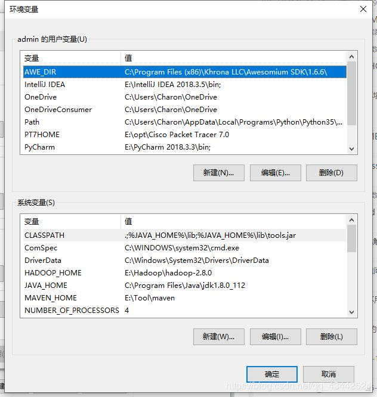

相信大家初学java时，肯定会涉及到“配置环境变量”，而在网上搜索大多是教我们如何如配置，真正说明为什么要去配置环境变量的不多。
不管在windows里还是liunx里都少不了环境变量的配置，一键Copy是解决不了问题的，还可能会出现各种各样的问题，如果我们搞清楚原理，就会方便许多。
今天我们就以java环境变量来了解，什么是环境变量以及为什么要配置。
什么是环境变量
环境变量（Environment Variable ）
环境变量是在操作系统中一个具有特定名字的对象，它包含了一个或者多个应用程序所将使用到的信息。
变量
可以随意给其赋值的一个存储单元
环境
例如jvm这些都属于小软件，它们处于操作系统这个大软件中。
环境变量的作用
变量在任何程序中的作用都是“被赋值/被取值”！这个全局变量操作系统可以使用，其内的小软件也可以使用！
环境变量有哪些

2. 在Linux中
设置：
在 /etc/profile文件中设置，export的意思就是将局部变量设置为环境变量。现有的变量是被这样一行代码设置的：
export PATH USER LOGNAME MAIL HOSTNAME HISTSIZE HISTCONTROL这几个环境变量已经有一些默认值了，不过我们可以追加内容，比如修改PATH：
# : 的意思是并列
PATH = /abc/def:$PATH查看：
查看全部，使用env命令即可。
查看单个，可以使用echo：如echo $JAVA_HOME。
在JAVA中
我们知道什么是环境变量以后，在java中会具体怎么用到呢？
常见的Java相关环境变量及其作用
PATH
PATH是操作系统用的，用来指定操作系统需要使用到的可执行程序的位置。对于Java来说，通常需要把JDK的bin目录添加进入PATH中，这样你就可以在任意目录下使用bin下面的可执行程序，如javac.exe、java.exe等。
这个变量一定要保证将JRE/JDK的bin纳入其中。
JDK,JRE，JVM三者之间的关系，以及JDK，JRE包含的主要结构有哪些
JDK = JRE + Java的开发工具（javac.exe,java.exe,javadoc.exe）
JRD = JVM + Java核心类库JAVA_HOME
JAVA_HOME是一个约定，通常它指的是JDK的目录。如果需要JDK的话，大部分程序会默认去环境变量中取JAVA_HOME这个变量。
很重要，一些java开发的工具例如IDEA就需要。
CLASSPATH
在于告诉Java执行环境，在哪些目录下可以找到我们所要执行的Java程序所需要的类或者包。不过在JDK1.5之后的版本完全可以不用设置classpath环境变量就能正常运行程序。
那么错误可能会有两种情况，一是没有找到命令，二是没有找到命令所要操作的文件。
本文虽然简短，也就是带大家了解环境变量是什么，作用是什么。
感谢你的阅读！
最后又到了分享干货的时候了
请关注我，私信我即可领取！
最后，感谢你的阅读！我是小架
我们下篇再见！